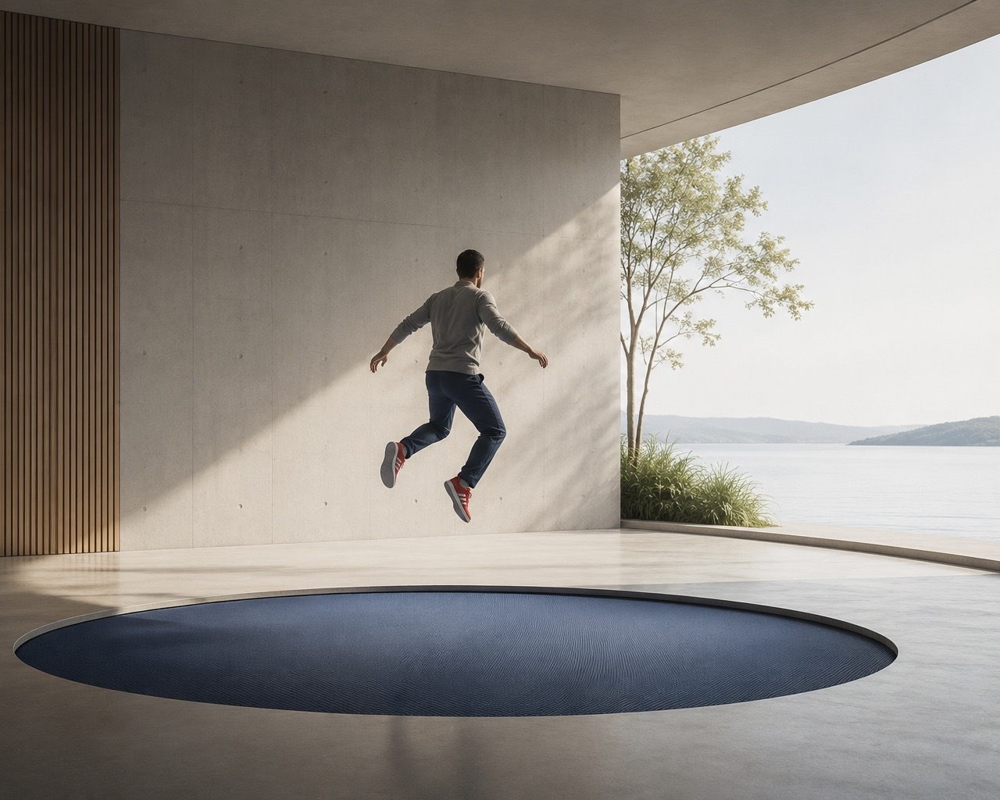

Blue Trampoline
Development matters, both now and in the future. But how do you decide what is worth focusing on before committing time and money?
Many businesses are strong in what they do. They deliver, solve complex problems, and operate with discipline. But when it comes to development, new opportunities, new directions, new ways of creating value, the picture becomes less clear.
The need is there. The ideas are often there. The time and structure are not.
Development work tends to sit between strategy and operations. It is important, but not always owned. It is discussed, but not always shaped. It competes with daily priorities and often remains based on assumptions rather than evidence.
This creates a familiar situation:
- multiple ideas, limited direction
- curiosity without structure
- effort without clear outcome
Blue Trampoline works in that space.
The role is not to define the full strategy or to execute large-scale solutions. It is to help businesses understand where development should happen, and what those opportunities could become, before significant investments.
This is done by turning ideas and uncertainty into something more concrete:
- a shared understanding
- a structured opportunity
- a foundation for decision
